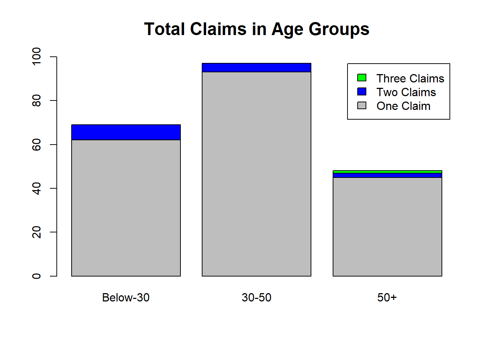

Data Report
For the report I primarily did the data cleaning and joining in Access using SQL. After creating my final ABT I did some summary queries using SQL. I then took the final ABT to R where I completed some more analysis. The report is structured as follows.
The four Datasets given were customers, Health_Policies, Travel_Policies, and Motor_Policies. They were joined to create a combined ABT using four separate left joins in SQL. These are run through three queries named CombineTravel, CombineTravelMotor, and CombineTravelMotorHealth
Each join builds upon the ABT created previously and is built using the Customers dataset as a base. Customers has one primary key, (CustomerID), and three foreign keys, (TravelID, MotorID, HealthID), that it uses to match and join. Each new ABT is created using its corresponding foreign key. CombineTravel is joined on TravelID, CombineTravelMotor is joined on MotorID, and CombineTravelMotorHealth is joined on HealthID.
A LEFT JOIN is used to preserve the number of customers in the primary data, and only match those who have policies with the company. The combined data set was called CombinedTable. After combining the tables there are the two forms of foreign key used for matching. As both are not needed, I removed the three ID columns which SQL created and left the three original ID columns. This was applied using the RemoveColumns query in SQL.
When examining the data in Access there did not appear to be any missing data for each of the policies, before or after the tables were joined. This was checked simply using a count query for some of the major fields. Some key points of the raw data are below.
• Customer ID: all had a unique identifier for both themselves and their respective policies • Title: Query created in SQL to unify the naming convention • Middle Initial: Removed to reduce clutter • Gender: Query created to unify naming convention • Preferred Channel of Communication: Query created to unify naming convention
A point for improvement for the company would be improving the data input for simple fields. While the overall data did not have missing values which is very important, simple fields like gender, title, and Preferred Channel could be greatly improved. Whether this is at the input stage using data validation for customers or when compiling the data into the initial tables. This should lock the values to set values.
Much of the data manipulation was completed in Access using SQL. Queries were used that directly update the main ABT and as such should there be updates to the data at a later stage these queries can be ran again with the same data cleaning outcome. Fields like gender, title, preferred channel are all able to be replicated.
As well as the points above there were several outliers in the data. For Age there were three anomalies that were picked up after the AgeOutliers query was ran to check for any issues. This checked if individuals were outside the range of 18 – 100. Each value was fixed with separate update queries. Vanessa King, Georgina Clark, and Bilal King had ages of 180, -44, and 210, respectively. I have assumed small mistypes for each of these values and as such corrected them to 18, 44 and 21
The number of dependent kids field also included a possible error. There was a value of 40 included which has been assumed to be 4 and rectified.
The table has been corrected for problems in general data quality talked about above and has been corrected for the outliers mentioned. The last update made to create the finished ABT is a column was added to group the ages into three brackets, less than 30, 30 – 50, and 50+. The query used for this called CreateAnalysisTable. The final table is called AnalysisTable. Additional Data for Future Analysis
In the analysis section there were two extra points that would be useful and easy to implement in future data gathering. Both data fields could be set to a Boolean value and then used to give further insights. Firstly, the age subscription to the health plan seems unusual and I have proposed that it may be due to middle aged people paying for relative’s health care. As such a field such as receives health care with be beneficial. This could simply be set to 0 if no, and 1 if yes. This may then explain why there are significantly lower numbers in the older age not having a health policy. As well as this a value for provides health care with the same 0, 1, system could be useful. For example, instead of targeting the older generation with health care adds, you may need to target middle aged individuals who are more likely and receptive to paying for elderly relative’s healthcare. Another field that would be useful would be number of times travelled abroad in the last year. A simple integer value input could provide the company with valuable information on what individuals travel regularly without insurance and as such, should be targeted with Travel Policy.
The gender splits are shown in the bar plots below with male as blue and female as red
